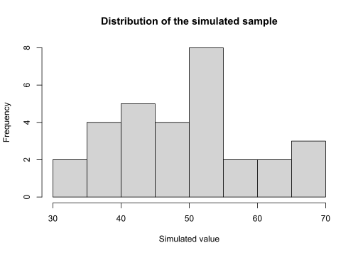
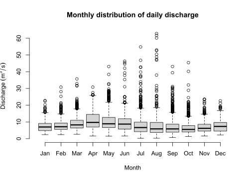
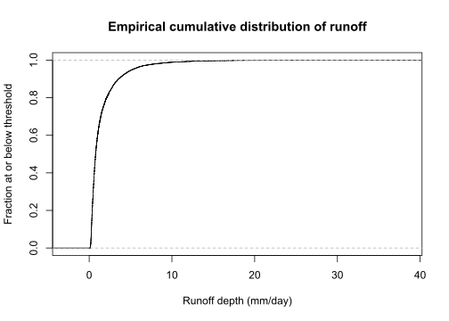
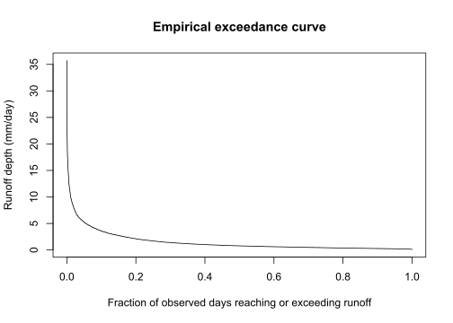
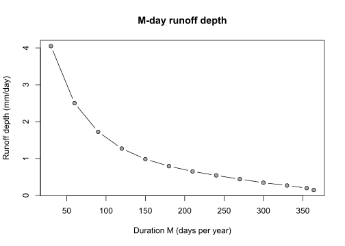

By the end of this session, you should be able to:
describe the location and dispersion of observations;
import daily hydrological data and identify missing measurements;
distinguish calendar years from hydrological years;
choose between sums and means and check the completeness of an aggregation;
interpret a hydrograph, boxplot, Q-Q plot and flow duration curve;
calculate a runoff coefficient for a common observation period.
A dataset is a collection of observations used to describe a population or investigate assumptions about it. It may contain univariate or multivariate data. In R, tabular data are commonly stored in a data.frame or a related class such as data.table or tibble.
The examples use base R. The interactive answer fields use the webexercises package, which must be installed before rendering this chapter. Run the examples from the project directory so that the relative paths to data/ work.
3.1 Exploratory Data Analysis (EDA)
EDA is an approach to inspecting, describing and visualizing data. The workflow depends on the question and the dataset. Before interpreting a statistic, check what was measured, its units, the observation period and the treatment of missing values.
We begin with a reproducible sample from a normal distribution.
Setting the seed makes the subsequent random generation reproducible when the same code and random number generator settings are used.
2
Generate 30 observations from a normal distribution with mean 50 and standard deviation 10. The sample mean and standard deviation will generally differ from these population parameters.
TipExercise
Change the parameters of rnorm() and describe their effects. Use ?rnorm and ?set.seed for help.
Run rnorm() twice, first without resetting the seed and then resetting it before each call. Explain the difference.
3.1.1 Measures of location
Measures of location summarize where observations lie. The mean, median and mode describe different aspects of a distribution and may differ substantially in skewed data.
3.1.1.1 Mean
The arithmetic mean is the sum of the observations divided by their number:
Append a single number to the original, unchanged vector x so that the new sample mean is 64.131. What number must you append? Round your answer to four decimal places: .
Derive the answer using the definition of the arithmetic mean. Does the required number resemble the other observations? What does this show about the sensitivity of the mean to extreme values?
3.1.1.2 Median
The median is the 50th percentile, or quantile of probability 0.5. At least half of the observations are less than or equal to it, and at least half are greater than or equal to it. For an odd sample size, it is the middle sorted observation; for an even sample size, R uses the mean of the two middle observations.
The mode is a value occurring with the highest frequency. For continuous data, exact repetitions may be rare, so we often identify a modal interval using bins or estimate a mode from a density curve. The result depends on the bin boundaries or smoothing settings. R’s mode() function describes an object’s storage mode; it does not calculate the statistical mode.
names(which.max(table(y))) # The first most frequent interval, if there is a tie.
[1] "(41.6,45.3]"
Code
hist(x, breaks =10,main ="Distribution of the simulated sample",xlab ="Simulated value", ylab ="Frequency", col ="lightgray")

TipExercise
Use cut(x, breaks = 20) and compare the frequency table with the previous result. How sensitive is the modal interval to the number of bins?
Compare the histogram with plot(density(x)). Note that hist() may choose convenient boundaries rather than exactly the requested number of bins.
3.1.1.4 Quantiles
A quantile of probability \(p\) identifies a location in the ordered data. For example, the 0.1 and 0.9 quantiles describe the lower and upper parts of a distribution. Sample quantiles may involve interpolation; R’s default is type = 7.
Code
quantile(x, probs =c(0.1, 0.5, 0.9))
10% 50% 90%
38.49171 49.26267 62.84304
3.1.2 Measures of dispersion
Measures of dispersion describe the spread of observations. Always interpret them together with the location, units and shape of the distribution.
3.1.2.1 Range
The range width is the difference between the largest and smallest observation:
\[R_x = \max(x) - \min(x).\]
Code
range(x) # The two endpoints.
[1] 30.33383 67.86913
Code
diff(range(x)) # Their difference.
[1] 37.5353
3.1.2.2 Population variance and sample variance
For a finite population of size \(N\), with population mean \(\mu\), the population variance is
Under independent sampling from the same population with finite variance, the \(n-1\) denominator makes \(s^2\) an unbiased estimator of the population variance. Daily hydrological observations often exhibit serial dependence, so this sampling assumption should not be taken for granted. R’s var() calculates the sample variance with denominator \(n-1\).
3.1.2.3 Standard deviation
The standard deviation is the square root of the variance and has the same units as the observations. Variance has squared units.
Code
sd(x)## [1] 9.810307sqrt(var(x))## [1] 9.810307
3.1.2.4 Coefficient of variation
The coefficient of variation relates the standard deviation to the mean:
\[CV = \frac{s}{\bar{x}}.\]
It is dimensionless and may be multiplied by 100 to express it as a percentage. It is useful for quantities with a meaningful zero and a positive mean, such as runoff. It is undefined when the mean is zero and unstable when the mean is close to zero. A conventional relative-variability interpretation is unsuitable for temperature in degrees Celsius, whose zero is arbitrary.
3.1.2.5 Interquartile range
The interquartile range is the difference between the upper and lower quartiles:
\[\mathrm{IQR} = Q_{0.75} - Q_{0.25}.\]
Code
IQR(x)
[1] 11.60016
TipExercise
Using the functions introduced in Chapter 2, write a function that calculates sample variance from its formula. State how it handles missing values and samples with fewer than two valid observations. Compare its output with var().
Compare the mean, median, standard deviation and IQR before and after appending an extreme value to x. Keep the original x unchanged for later comparisons.
3.2 Hydrological data
We will use a local daily dataset for catchment 01138000 from MOPEX, a collection of hydrometeorological observations for US catchments. The file contains 20,454 daily records from 1 January 1948 to 31 December 2003. The presence of a date does not imply that every variable was measured on that date.
Runoff depth and volumetric discharge are different quantities. Discharge in \(\mathrm{m^3\,s^{-1}}\) must be converted using catchment area and the duration of the time step before it can be compared with precipitation depth.
3.2.1 Import and data screening
Code
data_path <-"data/01138000.dly"mpx_01138000 <-read.fwf(file = data_path,widths =c(8, rep(10, times =5)),header =FALSE, strip.white =TRUE,na.strings =c("-99", "-99.0000"))names(mpx_01138000) <-c("date", "prec", "pet", "r", "tmax", "tmin")mpx_01138000$date <-as.Date(gsub(" ", "0", mpx_01138000$date), format ="%Y%m%d")rbind(head(mpx_01138000, n =5), tail(mpx_01138000, n =5))
1
The path is relative to the project directory. Change it if your data are stored elsewhere.
2
Read the fixed-width file: eight characters for the date and ten for each measurement.
3
The missing-value code in this dataset is -99, written as -99.0000 in the measurement fields. Use strip.white = TRUE to remove padding around fields and supply the text representations to na.strings to convert them to NA (not available) in all measurement columns, including precipitation. Negative temperatures are valid observations and must be retained.
4
In the source, a single-digit month or day is padded with a space. Replace the spaces with zeroes and parse the result with the explicit input format %Y%m%d (YYYYMMDD). The printed Date values use YYYY-MM-DD.
date prec pet r tmax tmin
1 1948-01-01 0.00 0.080 0.2620 -2.9167 -11.2556
2 1948-01-02 4.44 0.081 0.2501 -2.9556 -11.8500
3 1948-01-03 4.74 0.081 0.2501 -0.1778 -5.6444
4 1948-01-04 0.00 0.081 0.2620 -1.8778 -4.2222
5 1948-01-05 0.00 0.083 0.2501 0.8778 -4.3389
20450 2003-12-27 0.59 0.095 NA 0.1556 -5.6667
20451 2003-12-28 0.00 0.091 NA 1.6444 -12.8111
20452 2003-12-29 0.20 0.088 NA 4.1667 -12.5500
20453 2003-12-30 2.03 0.086 NA 4.8889 -9.4222
20454 2003-12-31 0.84 0.084 NA 3.5278 -1.7500
Code
# Check dates before grouping or plotting.stopifnot(!anyNA(mpx_01138000$date),!anyDuplicated(mpx_01138000$date),all(diff(mpx_01138000$date) ==1))# Count missing values separately for each variable.colSums(is.na(mpx_01138000))
date prec pet r tmax tmin
0 2 0 8492 0 0
Code
range(mpx_01138000$date[!is.na(mpx_01138000$r)])
[1] "1948-01-01" "1980-09-30"
Code
# These quantities cannot be negative; temperatures can.nonnegative_vars <-c("prec", "pet", "r")sapply(mpx_01138000[nonnegative_vars], function(z) sum(z <0, na.rm =TRUE))
There are 2 missing precipitation values and 8,492 missing runoff values. Runoff observations end on 30 September 1980, although the file continues to 2003. A missing measurement is not a zero. Investigate failed quality checks against the metadata rather than automatically deleting unusual observations.
Figure 3.1: Daily runoff depth in the MOPEX file. The line ends when runoff observations cease; the date axis covers the entire file.
The time axis reveals coverage and temporal patterns that a single summary statistic cannot show. Here, the blank period after September 1980 represents missing observations. It does not represent a dry river.
TipExercise
Measurement files are often accompanied by metadata describing location, units, time coverage and missing-value codes. Inspect the header of this GRDC file and import it using read.table() or read.delim(). Determine the delimiter, number of header lines and missing-value code before importing it.
Explain why replacing every negative number in a hydrometeorological dataset with NA would be incorrect.
3.3 Aggregation and summation
Choose the summary according to the quantity. Daily precipitation and runoff depths are summed to obtain annual depths in mm. Temperatures and volumetric discharge are commonly averaged over time; these means retain the original units. Missing observations must be counted before interpreting either result.
format() extracts calendar components. Here, decade = 1960 denotes 1960–1969. The derived tmean is an approximation to daily mean temperature using the two daily extremes; it is not an independently measured daily mean.
The hydrological year in Czechia runs from 1 November to 31 October and is labelled by its ending year. For example, hydrological year 1980 starts on 1 November 1979. We apply this convention to the US dataset as a teaching example; hydrological-year boundaries depend on the region and purpose of the analysis.
TipExercise
Add a quart column using quarters().
What fraction of days with valid precipitation measurements had no precipitation? Round to six decimal places: .
How many days had tmin < 0 °C? .
How many days had tmin < 0 °C during May, June, July or August? .
Find the three largest daily maximum temperatures (tmax), in descending order: . Find the three smallest daily minimum temperatures (tmin), in ascending order: . Separate the values with commas.
3.3.2 Annual summaries and completeness
For this exercise, an annual statistic is reported only if every expected day has a valid measurement of that variable. This deliberately strict rule prevents an incomplete year from appearing to have a small annual total. Other completeness rules are possible, but must be specified and justified.
The function below uses split() to group daily records, lapply() to summarize each group and do.call(rbind, ...) to combine the results. The expected number of days is calculated from year boundaries, so leap years and partial first or last years are handled explicitly.
The calendar year 1948 has incomplete precipitation measurements. Runoff is incomplete in calendar year 1980 and entirely missing in later years. sum(z, na.rm = TRUE) alone would hide this distinction: it even returns zero when every observation is missing. The count columns make the reason for each missing annual statistic visible.
TipExercise
Compare the calendar-year and hydrological-year summaries. Why is the first hydrological year incomplete even when daily temperature measurements are available for every date in the file?
Find the years with both complete precipitation and complete runoff. Why must this selection precede a comparison of annual water-balance quantities?
3.4 Visualizing distributions
3.4.1 Boxplot
A boxplot summarizes the median, lower and upper hinges (approximately the quartiles), whiskers and individual values beyond the whiskers. With R’s default settings, whiskers reach the most extreme observations within 1.5 IQR of the hinges. They do not generally represent the 10th and 90th percentiles. Values beyond the whiskers deserve investigation but are not automatically errors.
We now use the GRDC station file. Its metadata identify daily mean discharge in \(\mathrm{m^3\,s^{-1}}\) and a missing-value code of -999.000. The first 36 lines precede the table header.
Code
station <-read.delim(file ="data/6242910_Q_Day.Cmd.txt",skip =36, header =TRUE, sep =";", strip.white =TRUE,col.names =c("date", "time", "value"),na.strings ="-999.000")station$date <-as.Date(station$date, format ="%Y-%m-%d")station$month <-factor(as.integer(format(station$date, "%m")),levels =1:12, labels = month.abb)boxplot(value ~ month, data = station,main ="Monthly distribution of daily discharge",xlab ="Month", ylab =expression(Discharge~(m^3/s)),col ="lightgray", frame =FALSE)

Figure 3.2: Monthly distributions of daily mean discharge at Nickelsdorf. All daily observations are supplied to boxplot(); values beyond the whiskers are shown.
The plot uses the original daily measurements, without first reducing them to a few quantiles. The full vertical range preserves high-flow observations. Compare seasonal medians, spreads and upper tails; these describe variability among days, not uncertainty in a monthly mean. See the R boxplot documentation for the whisker definition.
3.4.2 Q-Q plot
A quantile-quantile plot compares quantiles of two distributions. qqnorm() compares sample quantiles with theoretical normal quantiles. A roughly straight pattern is consistent with an approximately normal distribution; systematic curvature indicates differences in shape or tails. By default, qqline() draws a reference line through the first and third quartiles, rather than fitting a least-squares regression line.
Code
qqnorm(mpx_01138000$tmax,pch =21, col ="black", bg ="lightgray", cex =0.5,main ="Daily maximum temperature: normal Q-Q plot",ylab ="Sample temperature quantiles (°C)")qqline(mpx_01138000$tmax, col ="red")
Figure 3.3: Normal Q-Q plot of daily maximum temperature pooled across all seasons.
Pooling winter and summer temperatures combines different seasonal conditions. This graph alone therefore cannot establish whether temperature within a season follows a normal distribution. A Q-Q plot also does not assess temporal independence. See the R Q-Q plot documentation.
TipExercise
Describe the deviations from the reference line. Repeat the plot for January only and compare the shapes. Why might the pooled distribution differ from a monthly distribution?
3.4.3 Empirical cumulative distribution function
The empirical cumulative distribution function (ECDF) is the fraction of valid observations less than or equal to a threshold \(q\):
\[F_n(q) = \frac{\#\{x_i \leq q\}}{n}.\]
This is an exact description of the finite sample. It can be used to estimate a population probability, but a longer record does not automatically remove bias, dependence or changes over time.
Distinguish non-exceedance, \(X \leq q\), strict exceedance, \(X > q\), and reaching or exceeding, \(X \geq q\). The latter two differ when observations equal the threshold. In particular, \(1-F_n(q)\) describes strict exceedance.
100*ecdf_data(threshold) # Percentage at or below the threshold.
[1] 94.47417
Code
plot(ecdf_data, verticals =TRUE, do.points =FALSE,xlab ="Runoff depth (mm/day)", ylab ="Fraction at or below threshold",main ="Empirical cumulative distribution of runoff")

Figure 3.4: ECDF of valid daily runoff depths. The vertical axis gives a fraction of observations, not a percentage.
ecdf() returns a function that can be evaluated at any threshold. Its output is a fraction between 0 and 1; multiply by 100 for a percentage. See the R ECDF documentation.
3.4.4 Exceedance curve
An exceedance curve shows the fraction of observations reaching or exceeding a value. For regularly spaced daily observations, this also describes the fraction of observed days. It contains the same distributional information as the ECDF, with the probability direction reversed, and discards the chronological order of events.
Code
r_sorted <-sort(runoff, decreasing =TRUE)n_runoff <-length(r_sorted)# Use the last rank of each tied group to count all values >= that value.exceedance_prob <-rank(-r_sorted, ties.method ="max") / n_runoffplot(exceedance_prob, r_sorted, type ="s",xlab ="Fraction of observed days reaching or exceeding runoff",ylab ="Runoff depth (mm/day)",main ="Empirical exceedance curve")

Figure 3.5: Empirical runoff exceedance curve. Equal runoff values share the same probability of being reached or exceeded.
For distinct observations sorted in decreasing order, this empirical fraction is \(m/n\), where \(m\) is the rank. An alternative is to assign plotting positions, for example Weibull’s \(m/(n+1)\) or Čegodajev’s \((m-0.3)/(n+0.4)\). These are conventions for estimating probability positions, not the exact observed fractions used above. State the convention whenever comparing curves.
The inverse of a probability from daily data is not automatically a return period in years. Flood return periods require an appropriate event series and frequency model, for example annual maxima, together with their assumptions. Consecutive daily high flows may belong to the same event.
3.5 Hydroclimatic indices
3.5.1 Runoff coefficient
The runoff coefficient is the ratio of runoff depth \(R\) to precipitation depth \(P\) over the same catchment and period:
\[\varphi = \frac{R}{P}.\]
Both quantities must have compatible depth units, so the ratio is dimensionless. Over a long period it describes the fraction of precipitation represented by runoff; evaporation, changes in storage and other water transfers must be considered when interpreting it. Short-period ratios can be strongly affected by storage changes.
Climate summaries often use 30-year periods. WMO climatological standard normals use 30-year periods updated every decade, such as 1991–2020. This does not make that period a requirement for every runoff coefficient. The supplied runoff record cannot support a calculation for 1991–2020.
Code
# Select the same complete calendar years for both quantities.paired_annual <- annual[complete.cases(annual[c("prec_mm", "runoff_mm")]), ]range(paired_annual$year)
With the strict completeness rule, the common period is 1949–1979. The calculation uses the ratio of total depths over that period. Averaging individual annual ratios would give a different statistic, because each year would receive equal weight regardless of its precipitation.
TipExercise
Calculate the runoff coefficient separately for 1960–1969 and 1970–1979, using complete calendar years. Compare the values and explain why the observation period must always accompany the coefficient.
Repeat the common-period calculation using annual_hydro. Compare the included dates as well as the coefficients: the same year labels do not imply the same calendar interval.
3.5.2 Flow duration curve and M-day values
A flow duration curve expresses how often a flow is reached or exceeded. It is used in hydropower and river ecology. The exceedance curve above is its runoff-depth equivalent. Multiplying the exceedance fraction by the mean number of days per year gives a duration in days per year.
An M-day value is reached or exceeded for approximately \(M\) days in an average year. It is not a run of \(M\) consecutive days. Here, we estimate selected values using sample quantiles at probabilities \(1-M/365.25\). The use of 365.25 days is an approximation, and interpolated sample quantiles may not reproduce exact empirical exceedance counts.
Code
M <-c(30, 60, 90, 120, 150, 180, 210, 240, 270, 300, 330, 355, 364)m_day <-function(values, days, days_per_year =365.25) {quantile(values, probs =1- days / days_per_year,na.rm =TRUE, names =FALSE)}plot(M, m_day(mpx_01138000$r, M), type ="b",pch =21, bg ="darkgray",xlab ="Duration M (days per year)", ylab ="Runoff depth (mm/day)",main ="M-day runoff depth")

Figure 3.6: Selected M-day runoff depths from the valid daily MOPEX record, ending on 30 September 1980.
Small \(M\) values describe relatively high flows; large \(M\) values describe low flows. The curve characterizes the available observation period and does not preserve event timing. Comparisons between catchments or periods require compatible units, coverage and estimation methods.
TipExercise
Estimate the 30-day and 355-day runoff depths. Which one describes low-flow conditions?
Compare the hydrograph with the duration curve. Which graph can show when a drought occurred, and which can show the fraction of observed days below a threshold?